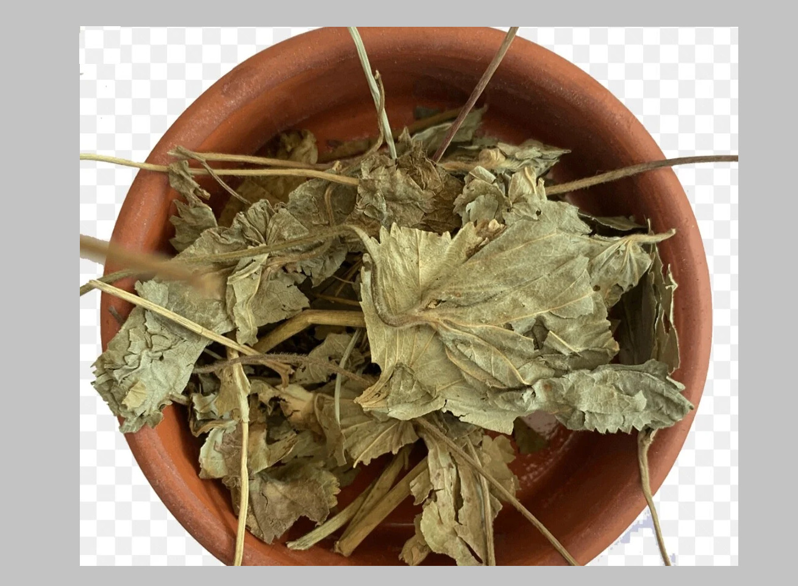

50 qr – 10 AZN
Aslan pəncəsi xalq təbabətində qadın sağlamlığını dəstəkləmək məqsədilə
istifadə olunan təbii bitkidir.
Aslan pəncəsinin faydaları
- Aybaşı dövründə rahatlıq hissini artıra bilər
- Hormonal tarazlığın dəstəklənməsinə kömək edə bilər
- Ümumi rahatladıcı təsiri ilə tanınır
Menstruasiya dövründə istifadəsi
- Krampların yüngülləşməsinə dəstək ola bilər
- Rahatlıq və sakitlik hissi verə bilər
Aslan pəncəsi çayı necə hazırlanır?
- 1 çay qaşığı qurudulmuş bitki
- 1 stəkan qaynar su
- 10–15 dəqiqə dəmlənir, süzülərək içilir
- Gündə 1–2 dəfə istifadə olunur
İstifadə zamanı diqqət
- Hamiləlik dövründə mütəxəssis məsləhəti vacibdir
- Uzun müddət fasiləsiz istifadə tövsiyə edilmir
- Xroniki narahatlıqlar zamanı həkimə müraciət edilməlidir